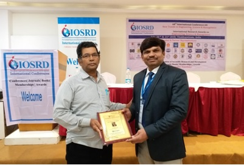
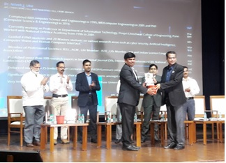
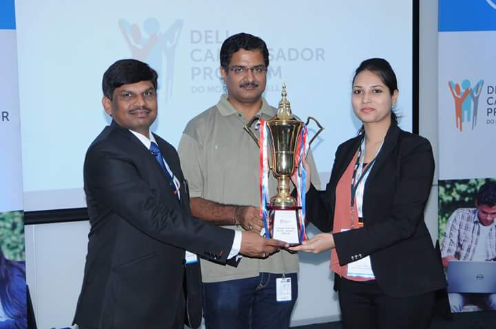
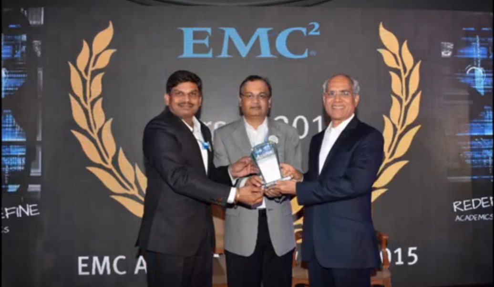

Dr. Nilesh J. Uke Honoured With Teaching Excellence Awards 2018
An award is something given to a person in recognition of his excellence in a certain field. Teaching Excellence Awards 2018 (TEA - 2018) was an effort of MT Research and Educational Services (MTRES) in association with Buzzingg and Indian Achievers Story to recognition the best teachers (Nation Builders) for their special contribution in respective domain. Meet one of the awardees, Dr. Nilesh J. Uke, who has been honoured with TEA-2018 as Excellent Teacher.
People in the entire world are converging; and is true with education. Today’s multidisciplinary nature of education needs to fill the gap; and is done rightly by MTRES. Various events conducted by them are remarkable and will help all stakeholders to keep pace with industry.
Dr. Nilesh Uke
Dr. Nilesh Uke was honoured with MTRES Teaching Excellence Award 2018
Considering the world’s security analysis system and planned protection of their country’s defence analogies, as we ponder about India’s defence and cyber crime investigation departments it’s high time now that we realise that India has yet to discover the best of security forces and protection system for the safe guard of Indian citizens. Here we present before you one such individual who has provided India with monumental achievements in this field of expertise. Dr. Nilesh is a Computer Science graduate from Amravati University in the year 1995 who proceeded on further to do the masters from Bharati Vidyapeeth opting to do a Ph.D. in Computer Science from STUM University in 2014. He is currently designated on the post of Principal in Trinity Academy of Engineering, Pune, Maharashtra. He had a kick start in his career from Department of Computer Science, National Defence Academy, Khadakwasla, Pune, where he felt proud to nurture young NDA candidates who would be the next generation officers of Indian Armed Forces. Later, he joined Sinhgad College of Engineering, Pune; which is affiliated to Pune University. He was promoted to the post of Assistant Professor in 2005 after his post-graduation and furthermore to add a cherry on the top he acquired the post of Professor after his Ph.D completion in 2014. He also worked with Pirmpri Chinchwad College of Engineering for couple of years before he could take over as Principal and Professor at Trinity Academy of Engineering. During his long tenure of working with many prestigious institutes of this country, the feat of his achievements have also walked with him in the tedious run and as it is always quoted that knowledge from whichever source it is acquired shall find its way one day in a lifetime seemed absolutely true to him.
IOSRD Young Scientist Award 2018
He was awarded with the Young Scientist Award in 2018 by IOSRD (International Organization of Scientific Research and Development) which instituted the scheme of Research Award with the aim of distinguishing researchers of extraordinary promise and creativity who have made notable research contributions in Science and Technology. He has delivered more than 100+ guest lectures on various domains of Computer and Information Technology at different engineering colleges in Pune University.
Cyber Crime Helpline Award 2017 by Digital Task Force & Cyber Crime Helpline
In 2017, he was awarded with the Cyber Crime Helpline Award 2017 organized by Digital Task Force & Cyber Crime Helpline at Pune.
Best HoD Award at Dell Campassador Program organized by Dell India
In 2016 he was given the Best HoD Award at Dell Campus Ambassador Program organized by Dell India in Bangalore.
EMC Star of 2014 Award at EMC Academic India Awards
The glorious accomplishments of this young man seem to be never ending. He also gained the EMC Star of 2014 Award at EMC Academic India Awards at Chennai in 2015. The legendary attainments of this young scientist are still continuing with the fact that he has in total published 128 research papers which includes paper presentations at national and international conferences and journals.